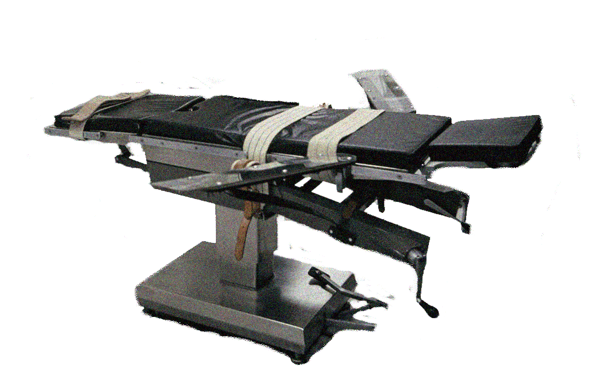

.*.*.*.*.*.*.*.*.*NEW WAY TO HEAVEN / ΚΑΙΝΟΥΡΓΙΟΣ ΔΡΟΜΟΣ ΓΙΑ ΤΟΝ ΠΑΡΑΔΕΙΣΟ.*.*.*.*.*.*.*.*.*.*
"Ήταν ένα περίεργο, αποπνικτικό καλοκαίρι, το καλοκαίρι οι Ρόζενμπεργκ
οδηγήθηκαν στην ηλεκτρική καρέκλα κι εγώ ούτε που ήξερα τι γύρευα στη
Νέα Υόρκη. Τα χάνω με τις εκτελέσεις. Η ιδέα της θανάτωσης με ηλεκτρο-
πληξία με αρρωσταίνει κι ήταν το μόνο πράγμα για το οποίο έγραφαν οι
εφημερίδες - οι επικεφαλίδες με κοιτούσαν επίμονα σαν γουρλωμένα
μάτια στη γωνιά κάθε δρόμου και στις μουχλιασμένες εξόδους του μετρό
που μύριζαν φιστίκια. Δεν είχε καμία σχέση με μένα, μα δεν μπορούσα
να σταματήσω να αναρωτιέμαι πώς θα ήταν να καίγεσαι ζωντανός,
η φωτιά να διατρέχει όλα σου τα νεύρα. Σκεφτόμουν ότι δεν πρέπει
να υπάρχει χειρότερο πράγμα στον κόσμο."
...Σύλβια Πλαθ, Ο Γυάλινος Κώδων, 1963, (κεφάλαιο πρώτο, παράγραφος πρώτη).

"It was a queer, sultry summer, the summer they electrocuted the
Rosenbergs, and I didn’t know what I was doing in New York. I'm stupid
about executions. The idea of being electrocuted makes me sick and
that's all there was to read about in the papers—goggle-eyed headlines
staring up at me on every corner and at the fusty, peanut-smelling
mouth of every subway. It had nothing to do with me, but I couldn’t
help wondering what it would be like, being burned alive all along
your nerves. I thought it must be the worst thing in the world."
Sylvia Plath, The Bell Jar, (chapter 1, paragraph 1).